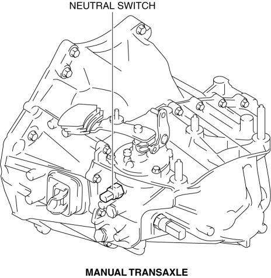
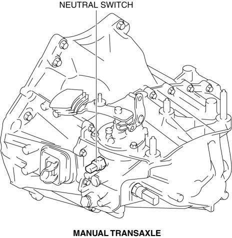
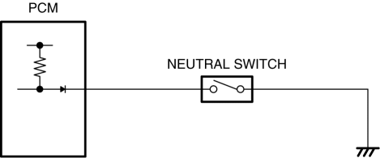
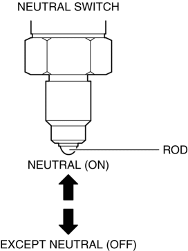
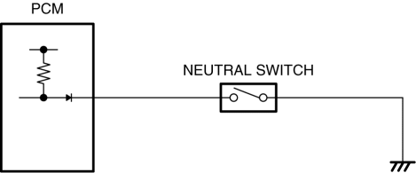
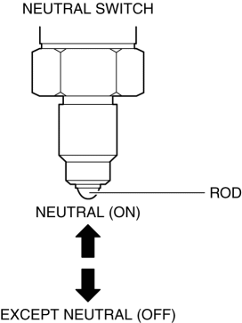

Detects the neutral position of the shift lever.
Installed to the manual transaxle. 
Installed to the manual transaxle.

An ON/OFF type switch has been adopted.
Sends the neutral switch on/off signal to the PCM.  The contact point is on when in neutral to output voltage and off when not in neutral. 
Sends the neutral switch on/off signal to the PCM.

The contact point is on when in neutral to output voltage and off when not in neutral.

Function not equipped.